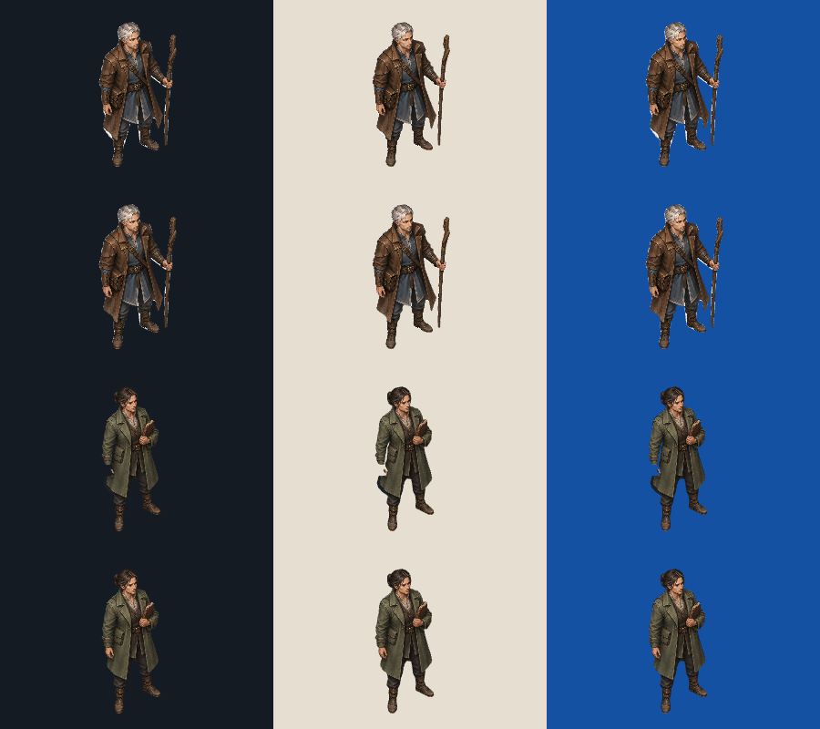
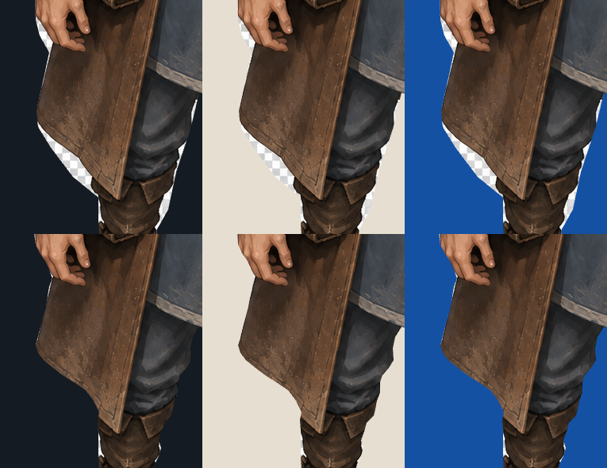
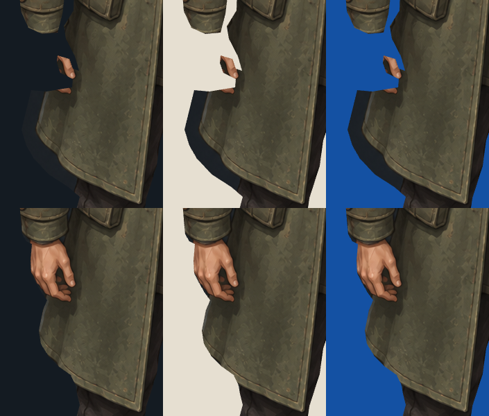
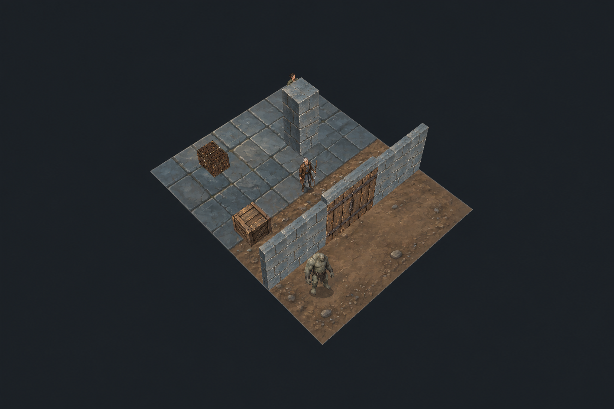

Godot is the shipping target; Pixi is the test harness. Source paintings, pivots and physical scale are unchanged. Rows: mage original, mage corrected, NPC original, NPC corrected. Columns: dark, light, blue.
Scoped still-contour pass: 36/36 source witnesses, known-bad controls rejected, and no large contamination patches or missing hand at the tested 50px/150px body sizes. This is not native alpha, fine-hair translucency, motion or lighting qualification. Tiny source-scale contour approximation remains.

Top: original. Bottom: corrected. The hand is preserved; pale skin is not removed as a matte.


Fresh high-resolution render from unchanged E04 view code with only the two JSON contours substituted through a recorded test fixture. Geometry and state are unchanged. Lighting remains pending.

Report and limits · Earlier failed evidence · Suite entrypoint